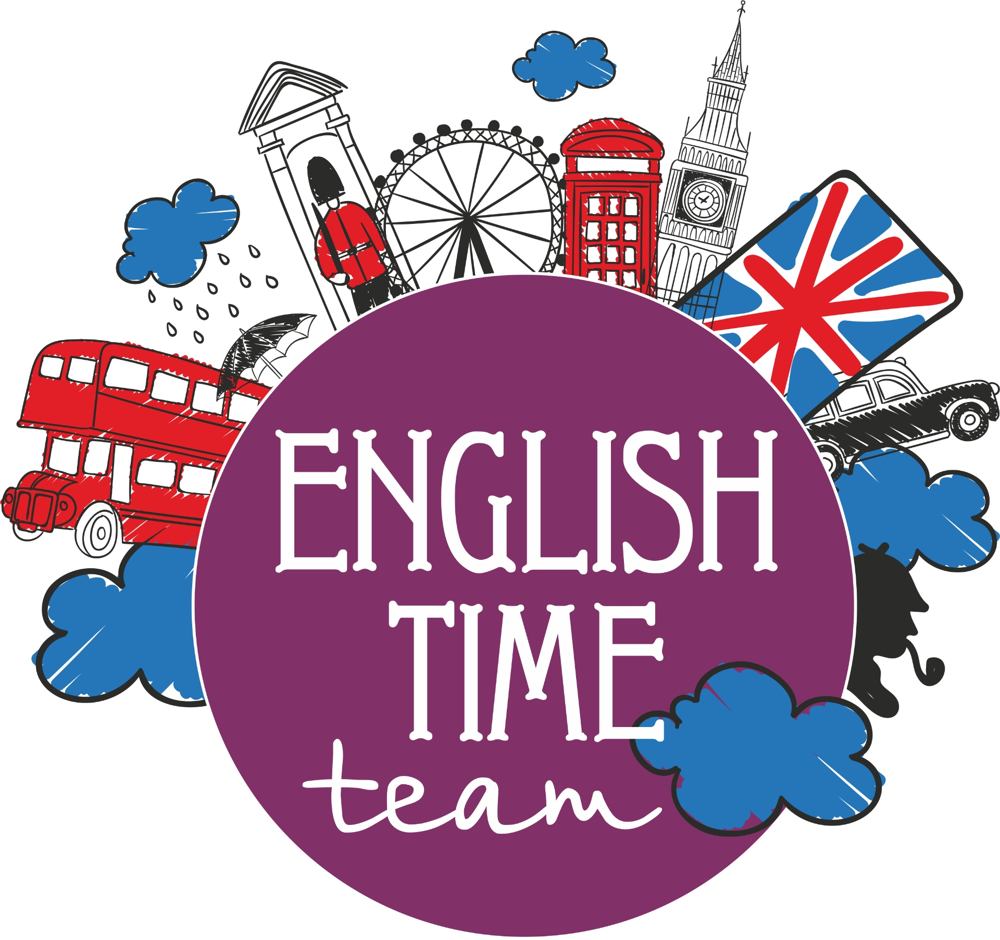

Our programs
Transformation hub Programs:
English
language courses
- Multi-level English
- IELTS
course
Pre-University
- Mathematics
- Physics
English language courses
Multi-level English
About the course
The three-level English language program (ELP) helps those
who want to start learning English from scratch or strengthen
the basic knowledge of students and move on to the next
stage of improving their language skills using the
international English language testing system (IELTS).
This course is designed so that each new
level is based on the
skills you acquired at the previous level. Below you can find
out what knowledge and skills you will gain after completing
the course and why our courses are more effective.
Each level consists of a twelve-week course that
lasts 3
months. Classes are held 6 hours a week, 4.5 of which are
contact.

The three-level English language program (ELP) consists of:
Starter Level (elementary) is an integrated skills course in which each part is divided into
grammar, vocabulary, work skills, and everyday English.
Course requirements: entrance test score corresponding to
level A2.
The course aims to help students achieve a General level of English proficiency. Successful
graduates of this course become independent users of the language, which is defined as level B1
in the common European foreign language proficiency (CEFR), developing:
Flyer Level (medium level). It aims to develop and further improve the level of language
proficiency to B2 level in the pan-European foreign language proficiency competencies. Level B2
corresponds to a more advanced, more independent level than the previous levels. Students who
have reached this level can communicate easily and without special training, Express their
thoughts clearly and in detail.
Course requirements: entrance test score corresponding to
level B1 or higher.
At the end of the three-level course, you will be able
to:
Understand and extract important information from a written or spoken text on a familiar topic;
● Skim through short text to get specific information;
● Predict the meaning of unfamiliar vocabulary using contextual hints;
● Control a set of individual words and phrases related to specific everyday topics, such as
Hobbies, shopping, food and nutrition, weather and seasons, household goods, urban and rural
life, etc . ;
● Perform various social functions, including greeting, meeting and saying goodbye, sending
requests, suggestions, invitations and apologies and responding to them, performing simple
operations in stores and offices, requesting and indicating directions, etc.;
● Describe people, places, likes, dislikes and daily routines in a series of simple phrases and
sentences;
● Write short and simple paragraphs describing people, places, and events;
● Correctly formulate the first and main sentence in the paragraph, which is the key to success in
writing an essay;
● Use linking words and relative pronouns to effectively organize sentences in a paragraph;
● To understand the form and function of basic tenses including the present simple and
continuous, past simple and going to future;
● Use a number of auxiliary verbs (am / is / are / was / were / can / could), as well as correct and
irregular verbs;
Understand basic grammatical features and functions, including interrogative words, comparative
and superlatives, goal infinitives, calculable and uncountable nouns, determinants, possessive
cases, and place prepositions.
The program combines all skills (reading, writing, speaking, and listening), with grammar taught
in context and vocabulary notebooks used to facilitate learning.
For whom?
The multi-level ELP program is designed for:
❏ students over 11 years of age who want to improve their English language skills;
❏ admission to the IELTS program of study, which makes it possible to further enroll in the
bachelor's, master's, postgraduate and doctoral programs in international Universities;
❏ students who want to improve their knowledge of English for career development,including
teaching.
Course structure
ELP is a set of programs that develop English language skills from elementary to intermediate
level in 3 stages. The program helps students prepare for further study in English.
ELP starts at the entry level, Starter Level, and
progresses to the intermediate level of English
proficiency at the Flyer Level.
Students can enter a particular level at any stage, depending on the results of the entrance tests.
Each stage (12 weeks) consists of 72 hours of training, of which-contact, including intermediate
and final tests at the end of the level, which are considered as practical exercises. After passing
the tests, students receive feedback from teachers with recommendations.
Classes are held three times a week and last 1.5 astronomical hours.
In addition, the course requires a minimum of 96 hours of self-education on the part of students
at each stage, which guarantees the success of students.
After completing the Flyer level, students are ready to start studying academic English in the
IELTS (international English language assessment system) format.
Attention: English language Learning in IELTS format is
recommended for students over 16 years
of age.
Tutors
Our team of instructors consists of teachers with experience in English, standardized exam
design, IELTS assessment, and psychology testing. The course developer has taught IELTS for the
past 12 years, lived in 5 different countries, and taught students from all over the world.
Fees information: Not given yet
Minimum requirements- information
| The course |
Minimum requirements for admission |
Minimum requirements for Successful completion |
| ELP Starter Level |
Level A1-A2 |
NA |
| ELP Mover Level |
Level A2 |
IELTS: 0 - 3.5 |
| ELP Flyer Level |
Level A2-B1 |
IELTS: 3.5 - 4.5 |